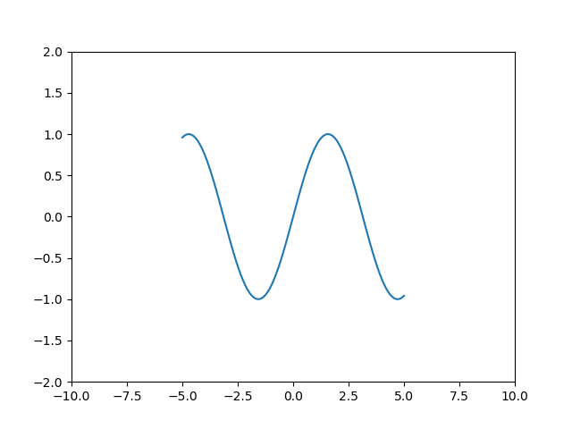
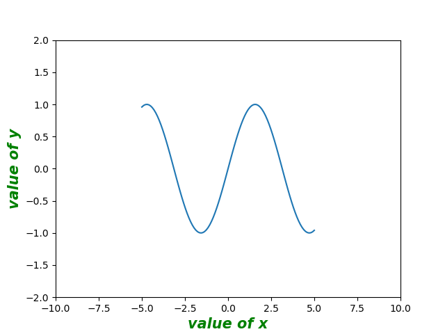
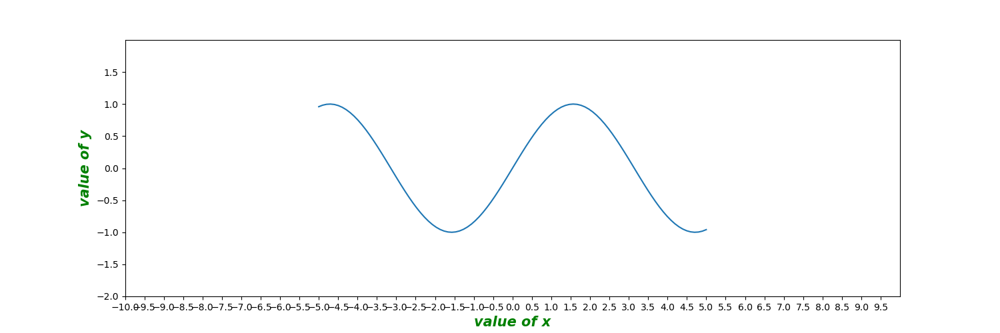

Matplotlib使用教程(三)：设置坐标轴
2020-03-19
# python常用库
# Matplotlib
设置坐标轴区间
调用plt.xlim与plt.ylim，传入坐标区间元组，即可分别设置x轴与y轴的取值范围
1 | x = np.linspace(-5, 5, 100) |

设置坐标轴名称
调用plt.xlabel与plt.ylabel，传入字符串，即可分别设置x轴与y轴的名称
除名称字符串外，可选参数包括: fontsize，fontweight，fontstyle，c(color)
fontsize设置字体大小，取值为正数
fontweight设置字体粗细，可选参数 [‘light’, ‘normal’, ‘medium’, ‘semibold’, ‘bold’, ‘heavy’, ‘black’]
fontstyle设置字体样式，可选参数[ ‘normal’ | ‘italic’ | ‘oblique’ ]，italic斜体，oblique倾斜
color设置字体颜色
1 | x = np.linspace(-5, 5, 100) |

设置坐标轴刻度
调用plt.xticks，plt.yticks，传入刻度值列表，即可分别设置x轴与y轴刻度
1 | x = np.linspace(-5, 5, 100) |
